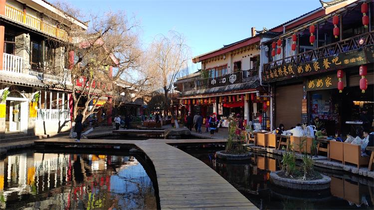

未来30天，国内最值得去的地方，安排吗？
阅读数：602019年08月02日 17:14
一到夏天就总想寻找凉爽的目的地出发，拒绝汗流浃背，吹着凉凉的风，这才是梦幻的夏日旅行...
今天小编就推荐这几个清凉避暑胜地，趁着夏天还在赶快安排上吧。
青岛崂山
青岛崂山，是一个神仙般的地方，忽闻海上有仙山，山在虚无缥缈间。崂山是山东半岛的主要山脉，是中国海岸线第一高峰，有着海上“第一名山”之称。
青岛崂山风景区九水山清水秀、空气清新、阳光充足，空气中密集的负氧离子还有强化和激活人体生理活动的作用。置身山水之间，看白云，听流水，访奇石，逗鸟雀，扑蝴蝶，饮山泉，戏游鱼，涉浅溪，闻回声……彼时彼刻的感觉就扑棱棱山鸟般腾飞。
“智者乐山山如画，仁者乐水水无涯”。自古以来，无数的文人墨客寄情山水，抒怀表志。时至今日，从喧哗的钢筋水泥中逃离，回到山林，早已成为很多人的假日情结。每当身心疲惫到无法忍受时，心中的那个情结就愈发强烈——奔向山水之所在。
民宿推荐：小隐隐于野
点击图片即可预定
坐标：位于青岛市崂山风景区区的二龙山景区
束河古镇
常人眼中的丽江无非只有大研古镇，而束河似乎一直隐匿在丽江背后，似少女一般，安静而美好。
从青石板铺就的停车场走上来，要走两条小巷，比丽江要宽敞不少，两边排满了琳琅满目的店铺，一条小河流淌而过，水声细细，远处叫卖声嘈杂声不再，厌倦了丽江古城的人流拥挤、喧嚣嘈杂，可以考虑来束河古镇住两天，这里肯定要宁静一些。
民宿推荐：花园式独栋别墅
点击图片即可预定
坐标：丽江古城束河古镇东阳路天域阳光
龙麒源
“龙麒源”这个名字，来自于畲族的一个重要的祖先级人物，龙麒，传说这座山，是他的“发源地”。一进景区，就是一条铁索吊桥，高200米、长500米，宽度只有1米。这桥虽然很稳，但走到后半段，还是有少许胆颤，毕竟两山之间壑宽沟深，天堑一线。
走上桥去，才能真正欣赏到峡谷的幽深险峻和翡翠湖的碧水，风光宛如世外桃源。

下桥之后紧接着又一道奇观：景区里徒步穿山。桥的一头连着这边的平台，一头连着那边的山脊，要想要过到山后面去，要么翻、要么穿，所以过了桥立马就是一条隧道，徒步穿越。
走吊桥、穿暗道、下长阶，这些“惊心动魄”的旅行体验都集中在这一个景点里面，龙麒源，可以称得上是一个“探秘”的景点。。

民宿推荐：水云见·源之古法实木

点击图片即可预定
坐标：温州文成南田镇驮湖村
亚龙湾热带天堂森林公园
亚龙湾热带天堂森林公园，恰如其名这里就像人间天堂。在《非诚勿扰Ⅱ》中，葛优打开鸟巢度假村的木窗，看着满山的青翠，对舒淇说，“这是一个可以死在这里的地方”。雨林葱郁，鸟声四起，空气中饱含清新的负氧离子，每一次呼吸都是惬意舒适的。站在山顶，还可以俯瞰整个亚龙湾。
过龙江索桥，全长168米，伴着脚步的一起一落桥面轻轻晃动，有点小紧张又有点小刺激，犹如两人初遇的爱情，也有情人桥之称。
最近红遍全球的热播剧《亲爱的热爱的》中，过龙江索桥可是韩商言的克星，这里每天都有众多各地游客慕名来打卡。
民宿推荐：异域风情私家泳池美墅
点击图片即可预定
坐标：三亚亚龙湾石溪墅111号
-

- 收藏
- 评论
- 分享
0条评论
 登录/注册住墅，发表你的评论
登录/注册住墅，发表你的评论